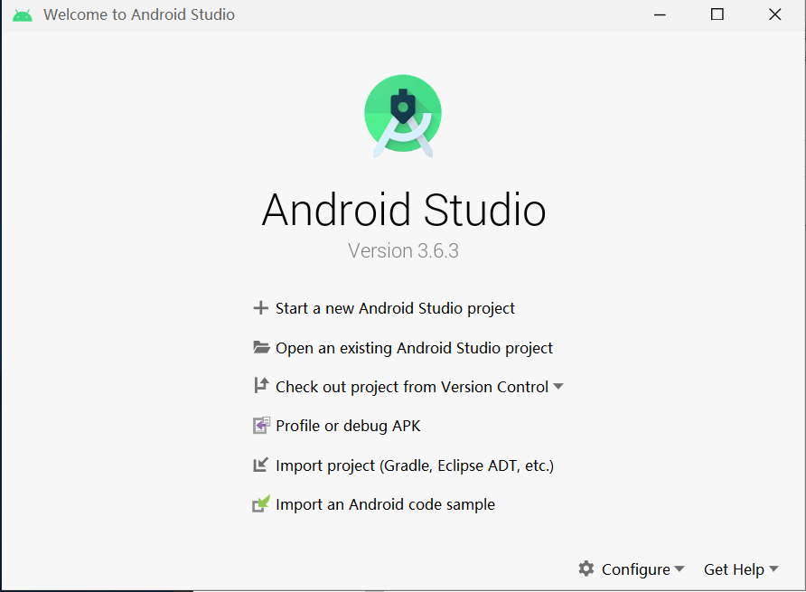
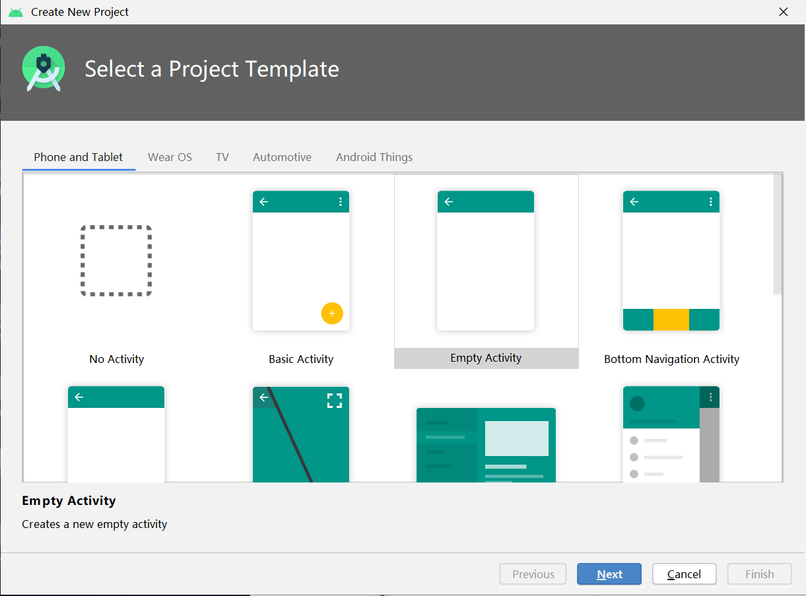
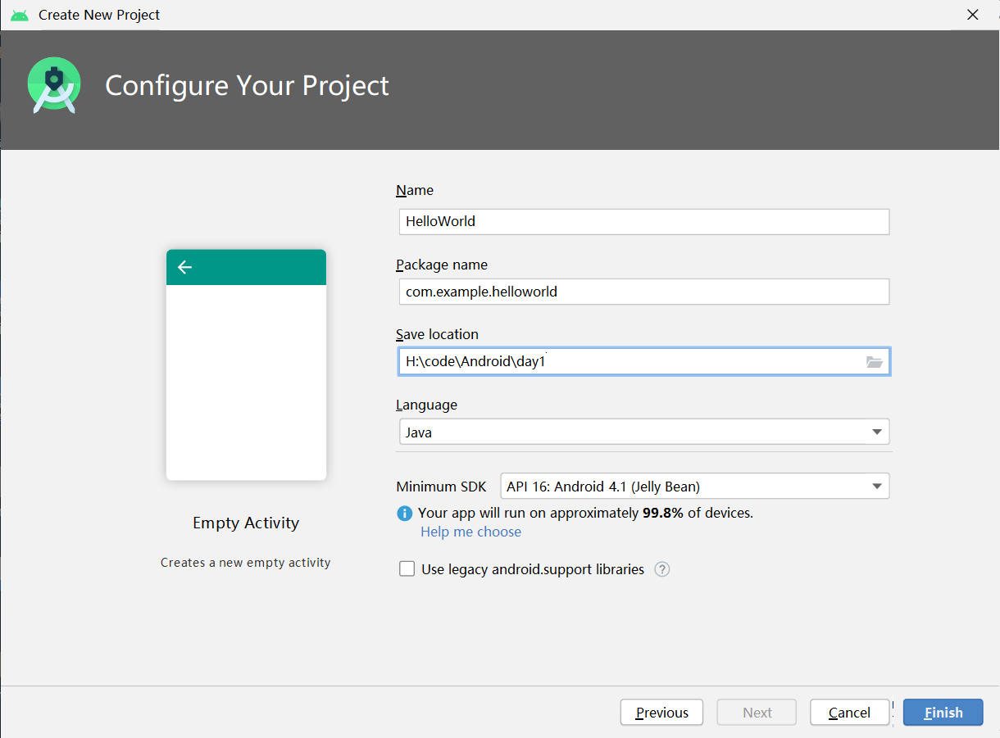
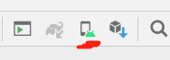
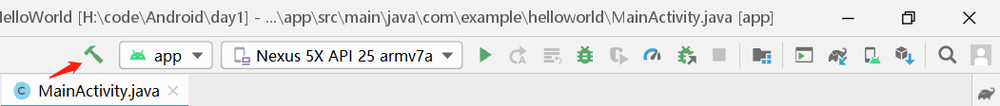
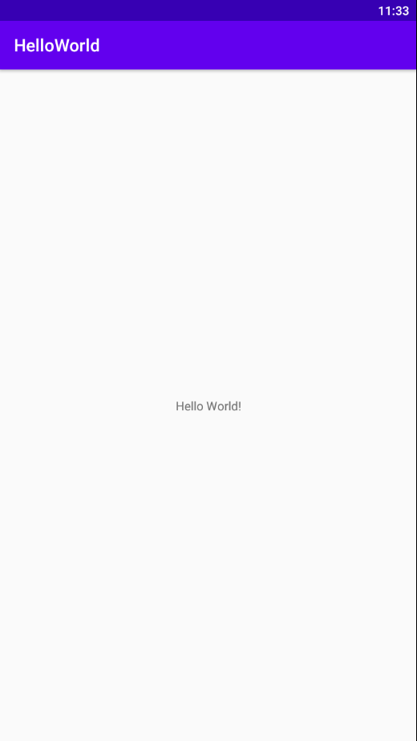
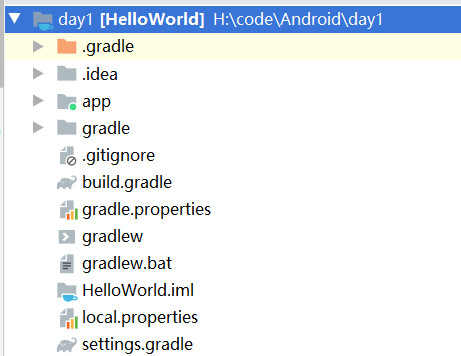
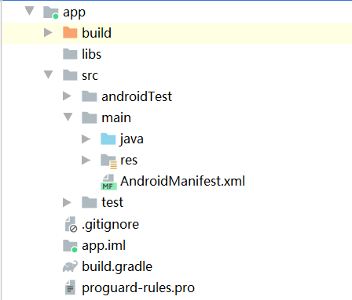
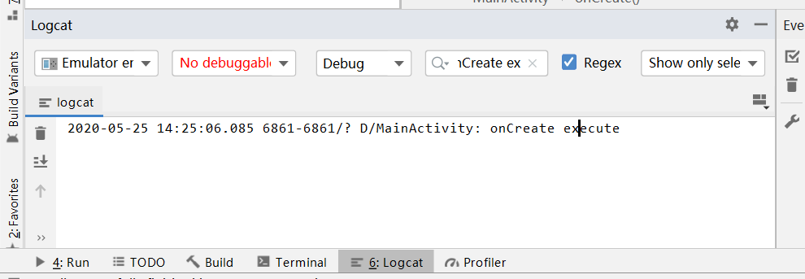

前言
因linux下的前景较窄，所以想了解下android下的一些内容，准备了好久，今天就正式吧。目前第一本书：《第一行代码:Android》。
正文
Android系统架构
Linux内核层
系统运行库层
应用框架层
应用层
Android应用开发特色
四大组件
活动（Activity）、服务（Service）、广播接收器（Broadcast Receiver）、内容提供器（Content Provider）
丰富的系统控件
SQLite数据库
强大的多媒体
地理位置定位
环境搭建
首先下载Android Studio：https://developer.android.google.cn/studio
安装的话直接跟着走就可以了，总的搭建过程还是比较简单的。
其中配置的时候会选择custom（自定义配置）还是standard（默认配置），看心情选吧。。
第一个Android项目
创建HelloWorld项目
首先打开界面：

点击start a new Android Studio project，然后开始选择模板。

这里直接选择Empty Activity，并做如下配置：

点击Finish，等待一段时间后项目便创建成功了。
启动模拟器
点击右上角的图标：

默认已经有了Nexus 5X这台设备模拟器了，然后点击Actions栏最左边的三角形按钮即可启动（因为我是amd的cpu，安装不了hxam，armeabi-v7a的镜像也比较慢，所以用bluestacks来代替）。
编译
点击这个锤子

等待编译完成后，就可以在项目下的app\build\outputs\apk\debug中找到编译好的apk。
安装运行
直接将apk文件拖到bluestacks中，点击图标启动即可：

分析HelloWorld项目
在左侧资源端口可以看到HelloWorld项目，点击箭头打开可以看到如下：

目录分析
一级目录
.gradle和.idea
这两个目录下放置的都是Android Studio自动生成的一些文件。
app
项目中的代码、资源等内容几乎都是放置在这个目录下的。
build
主要包含了一些在编译时自动生成的文件。（本地没有，但书上有说，也放进来以备用）
gradle
这个目录下包含了gradle wrapper的配置文件。Android Studio默认没有gradle wrapper方式，如需要打开，可以点击File -> Settings -> Build, Execution, Deployment -> Gradle进行配置。
.gitignore
这个文件是用来将指定的目录或文件排除在版本控制之外的。
build.gradle
这是项目全局的gradle构建脚本。
gradle.properties
这个文件是全局的gradle配置文件。在这里配置的属性会影响到项目中所有的gradle编译脚本。
gradlew和gradlew.bat
这两个文件是用来在命令行界面中执行gradle命令的，其中gradlew是在Linux或Max系统中使用，gradlew.bat是在Windows系统中使用。
HelloWorld.iml
iml文件是所有IntelliJ IDEA项目都会自动生成的文件，用于标识这是一个IntelliJ IDEA项目。
local.properties
这个文件用于指定本机中的Android SDK路径。
settings.gradle
这个文件用于指定项目中所有引入的模块。
app目录

build
与外层的build目录类似。
libs
如果项目中使用了第三方jar包，就需要把这些jar包都放在libs目录下，放在这个目录下的jar包都会被自动添加到构建路径里去。
androidTest
此处是用来编写Android Test测试用例的，可以对项目进行一些自动化测试。
java
用来方式所有java代码的地方。
res
项目中使用到的所有图片、布局、字符串等资源都要存放在这个目录下。图片放在drawable目录下，布局放在layout目录下，字符串放在values目录下。
AndroidManifest.xml
这是整个Android项目的配置文件，程序中定义的所有四大组件都需要在这个文件里注册，另外还可以在这个文件中给应用程序添加权限声明。
test
此处是用来编写Unit Test测试用例的，是对项目进行自动化测试的另一种方式。
.gitignore
这个文件用于将app模块内的指定目录或文件排除在版本控制之外，作用和外层的.gitignore类似。
app.iml
IntelliJ IDEA项目自动生成的文件。
build.gradle
这是app模块的gradle构建脚本。
proguard-rules.pro
这个文件用于指定项目代码的混淆规则。
项目运行分析
首先是打开AndroidManifest.xml找到如下代码：
1 | <activity android:name=".MainActivity"> |
这段代码表示对MainActivity这个活动进行注册（没有在AndroidManifest.xml中进行注册的活动是不能使用的）。
intent-filter里面， <action android:name="android.intent.action.MAIN" />表示这个activity是主入口，即启动程序时首先运行的就是这个活动；<category android:name="android.intent.category.LAUNCHER" />表示这个activity种类，要加到LAUNCHER程序列表里面。
然后再看下MainActivity这个活动的代码：
1 | public class MainActivity extends AppCompatActivity { |
可以看到MainActivity是继承自AppCompatActivity的，这是一种向下兼容的Activity，可以将Activity在各个系统版本中增加的特性和功能最低兼容到Android 2.1系统。
然后是onCreate()方法，这个方法是一个活动被创建时必定要执行的方法。
接着调用了setContentView()方法，这个方法给当前的活动引入了一个activity_main布局，可以在res/layout目录下找到它。
打开并切换到代码视图，代码如下：
1 | <?xml version="1.0" encoding="utf-8"?> |
其中TextView是Android系统提供的一个控件，用于在布局中显示文字。可以看到android:text="Hello World!"这句代码的定义，也就是我们上面屏幕中所显示的Hello World!。
详细项目中的资源
res目录下，所有以drawable开头的文件夹都是用来放图片的，所有以mipmap开头的文件夹都是用来放应用图标的，所有以values开头的文件夹都是用来放字符串、样式、颜色等配置的，layout文件夹是用来放布局文件的。之所以有那么多相同开头的文件夹，主要是为了让程序能更好的兼容各种设备。
使用资源
打开res/value/strings.xml，内容如下所示：
1 | <resources> |
有以下两种方式来使用它：
- 在代码中通过R.string.app_name引用
- 在xml中通过@string/app_name引用
其中tring可以替换成drawable、mipmap、layout之类的内容。
详解build.gradle文件
首先看下外层的build.gradle文件：
1 | // Top-level build file where you can add configuration options common to all sub-projects/modules. |
首先，两处repositories的闭包中都声明了google()和jcenter()配置，声明了这两行后，就可以在项目中轻松引用任何jcenter和google上的开源项目。
dependencies闭包中使用了classpath声明一个gradle插件。
接着分析下app目录下的build.gradle文件：
1 | apply plugin: 'com.android.application' |
第一行应用了一个插件，一般有两种值可选：com.android.application表示这是一个应用程序插件，com.android.library表示这是一个库模块。
接下来是android闭包，这个闭包中我们可以配置项目构建的各种属性，其中compileSdkVersion用于指定项目构建工具的版本。
同时，android闭包中又嵌套了一个defaultConfig闭包，defaultConfig闭包中可以对项目的更多细节进行配置。其中applicationId用于指定项目的包名，minSdkVersion用于指定项目最低兼容的Android系统版本。targetSdkVersion指定的值表示在该项目上已做过了充分的测试，系统将会为你的应用程序启动一些最新的功能和特性。versionCode用于指定项目的版本号。versionName用于指定项目的版本名。
然后再分析下buildTypes闭包。buildTypes闭包中用于指定生成安装文件的相关配置，其中的debug闭包（这里没有）用于指定生成测试版安装文件的配置，release闭包用于指定生成正式版安装文件的配置。minifyEnabled用于指定是否对项目的代码进行混淆。proguardFiles用于指定混淆时使用的规则文件，其中proguard-android.txt是所有项目通用的混淆规则，第二个proguard-rules.pro是当前项目的根目录下的，可以编写当前项目特有的混淆规则。
然后是dependencies闭包。这个闭包指定用来当前项目所有的依赖关系。Android Studio项目一共有3中依赖方式：
- 本地依赖：可以对本地的jar包或目录添加依赖关系。
- 库依赖：可以对项目中的库模块添加依赖关系。
- 远程依赖：可以对jcenter库和google库上的开源项目添加依赖关系。
dependencies闭包中的第一行implementation fileTree就是一个本地依赖声明，它表示将libs目录下所有.jar后缀的文件都添加到项目的构建路径当中。
第二行implementation则是远程依赖声明，androidx.appcompat:appcompat:1.0.2和androidx.constraintlayout:constraintlayout:1.1.3是一个标准的远程依赖库格式，androidx.constraintlayout是域名部分，constraintlayout是组名，1.1.3是版本号。加上这句声明后，Gradle在构建项目时会首先检查下本地是否已经有这个库的缓存，如果没有的话则会去自动联网下载，然后再添加到项目的构建路径当中。
testImplementation用于声明测试用例库，这个暂时用不到。
日志工具
Log
android的日志工具是Log，这个类中提供了如下5个方法供我们打印日志：
- log.v()用于打印最琐碎，意义最小的日志信息。
- log.d()用于打印调试信息。
- log.i()用于打印比较重要的数据。
- log.w()用于打印一些警告信息。
- log.e()用于打印程序中的错误信息。
示例：
在MainActivity的onCreate()方法中添加一行打印日志语句：
1 | Log.d("MainActivity","onCreate execute"); |
其中第一个参数是tag，一般传入当前类名即可，主要用于对打印信息进行过滤；第二个参数是msg，即想要打印的具体的内容：
